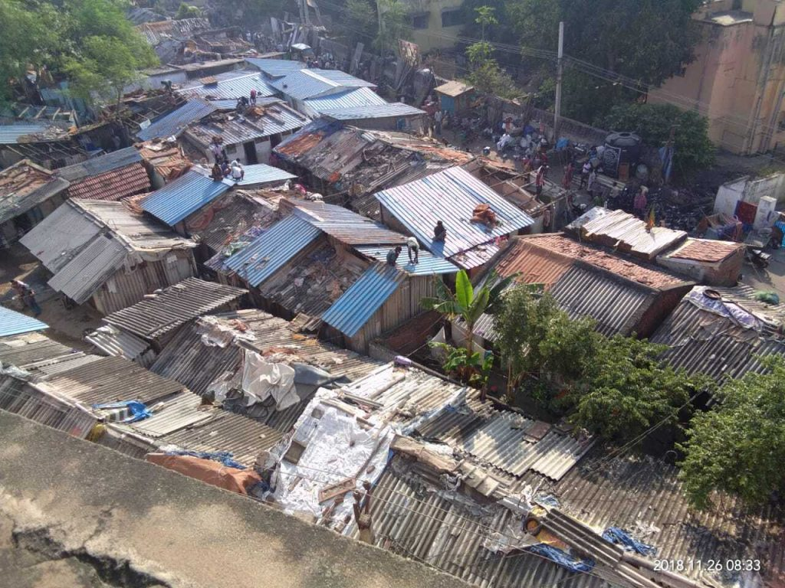

seethampeta

Seethampeta is a slum area located in the city of Visakhapatnam in the Indian state of Andhra Pradesh.Seethampeta slum is home to approximately 15,000 people, most of whom are daily wage laborers and belong to lower socio-economic groups.
Major Problems
- Land ownership: Many residents in Seethampeta slum do not have legal land ownership, which makes them ineligible for government housing schemes and other benefits.
- Waste management: The slum lacks proper waste management facilities, leading to the accumulation of garbage and creating unhygienic living conditions.
- Water scarcity: During the summer months, Seethampeta faces acute water scarcity, with many households having to depend on tanker water for their daily needs.
- Health services: The slum lacks proper health services, with only a few private clinics and no government hospitals nearby. This leads to residents having to travel long distances to access medical care